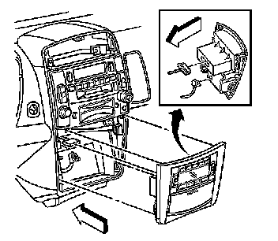
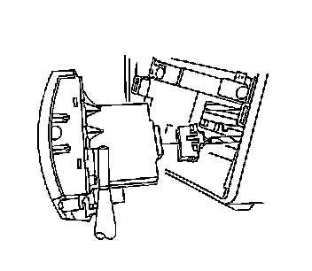
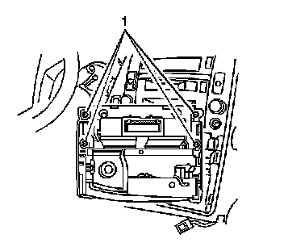

HVAC Control Module Replacement
HVAC Control Module Replacement
Removal Procedure
1. Turn the engine OFF.
2. Apply parking brake and place the transmission into the lowest gear setting.

3. Remove the screw behind the ashtray.
4. Remove the HVAC control module trim plate by pulling outward on right and left side.

5. Disconnect the HVAC control module electrical connector.
6. Disconnect the ash tray electrical connector.
7. Remove the HVAC control module screws (1).

8. Remove the HVAC control module.
Installation Procedure
1. Install the HVAC control module into the trim plate.
Notice: Refer to Fastener Notice .
2. Install the HVAC control module screws (1).
Tighten the screws to 2 N.m (18 lb in).
3. Connect the HVAC control module electrical connector.
4. Connect the ash tray electrical connector.
5. Install the HVAC control module trim plate by pressing trim until tabs engage.
6. Install the screw behind the ashtray.
Tighten the screw to 2 N.m (18 lb in).
7. Place the transmission in park and unapply the parking brake.
8. Refer to Control Module References (Programming and Relearning) for programming and setup information.